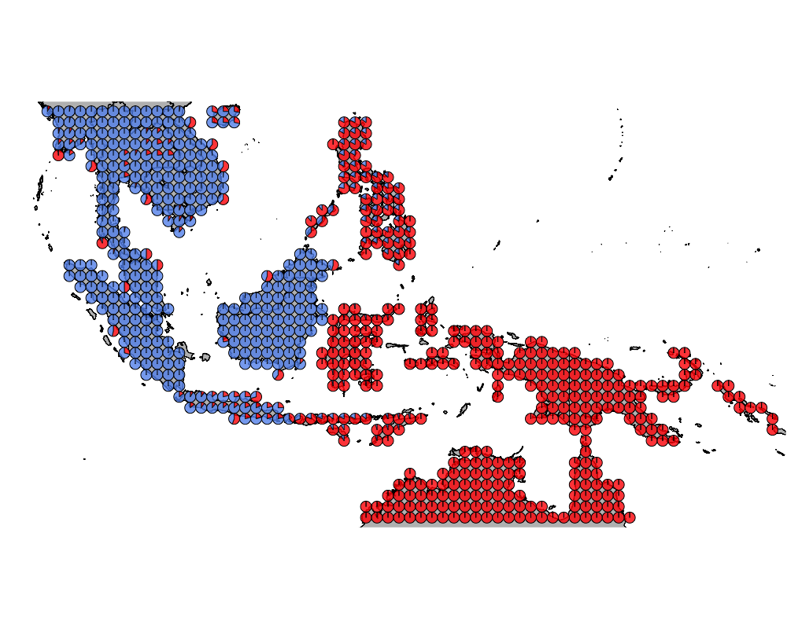
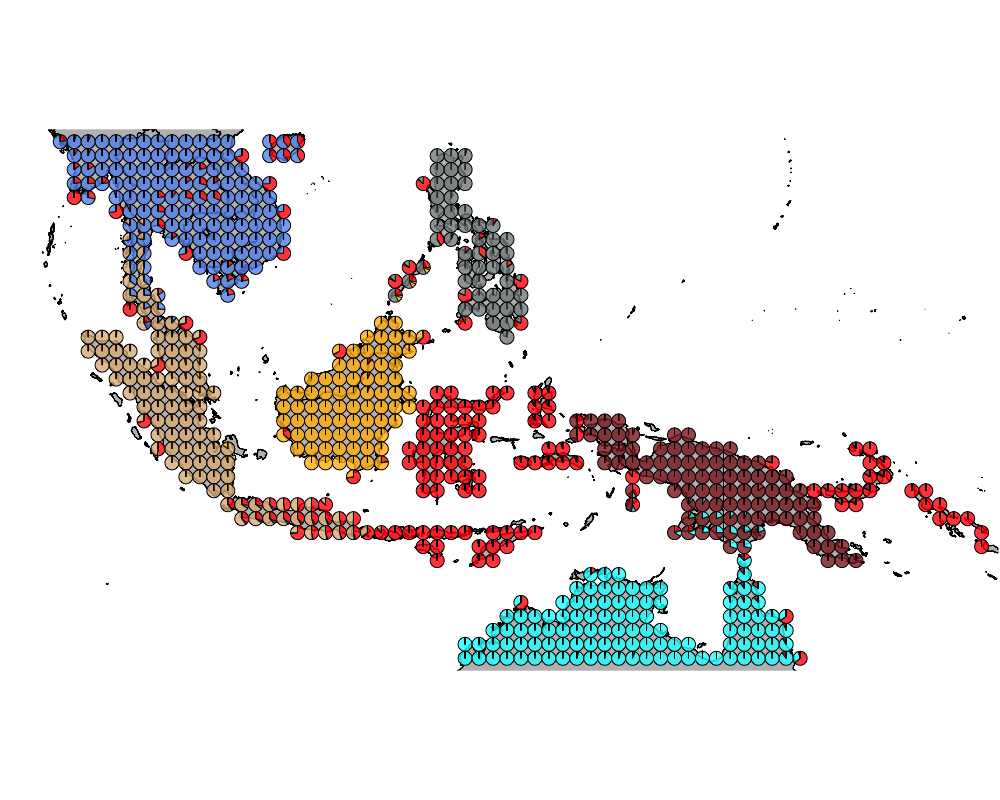
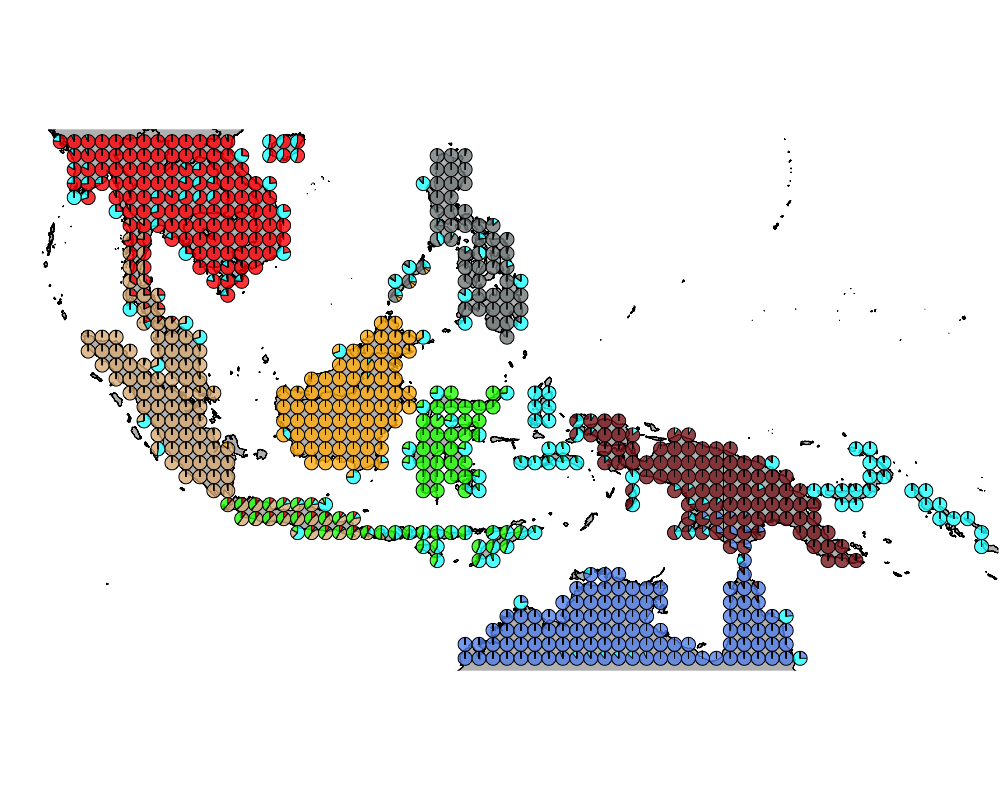
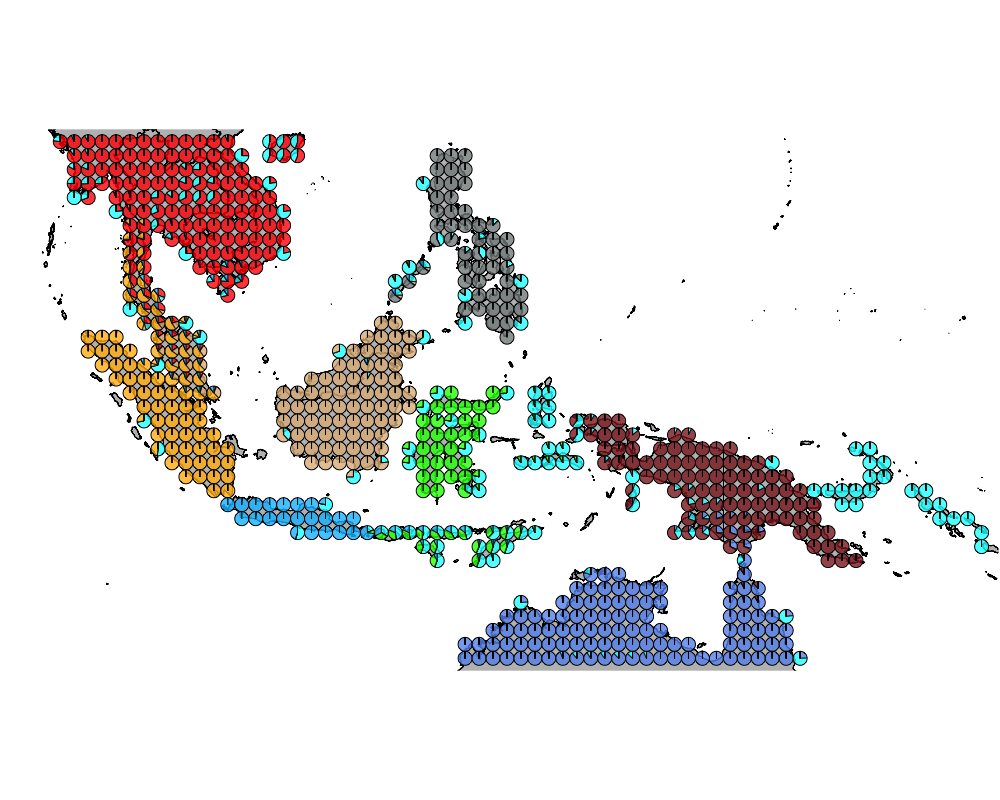

Wallacea region GoM analysis : mammals and birds
Kushal K Dey
6/5/2018
Intro
Here we observe the presence absence data of mammals and birds species (including different species of bats) in the Australasian region (Wallacea). We try to interpret that in the context of our Grade of Membership (GoM) model and its applications to presence absence data.
Packages
library(methClust)
library(CountClust)
library(rasterVis)
library(gtools)
library(sp)
library(rgdal)
library(ggplot2)
library(maps)
library(mapdata)
library(mapplots)
library(scales)
library(ggthemes)Load the data
Wallacea Region data
Mammals
mamms <- get(load("../data/mammals_with_bats.rda"))
latlong_chars_mammals <- rownames(mamms)Birds
birds <- get(load("../data/wallacea_birds.rda"))
latlong_chars_birds <- rownames(birds)pooled_latlong <- intersect(latlong_chars_mammals, latlong_chars_birds)
mamms_pool <- mamms[match(pooled_latlong, latlong_chars_mammals), ]
birds_pool <- birds[match(pooled_latlong, latlong_chars_birds), ]latlong <- cbind.data.frame(as.numeric(sapply(pooled_latlong,
function(x) return(strsplit(x, "_")[[1]][1]))),
as.numeric(sapply(pooled_latlong,
function(x) return(strsplit(x, "_")[[1]][2]))))combined_data <- cbind(mamms_pool, birds_pool)Map of Wallacea
world_map <- map_data("world")
world_map <- world_map[world_map$region != "Antarctica",] # intercourse antarctica
world_map <- world_map[world_map$long > 90 & world_map$long < 160, ]
world_map <- world_map[world_map$lat > -18 & world_map$lat < 20, ]
p <- ggplot() + coord_fixed() +
xlab("") + ylab("")
#Add map to base plot
base_world_messy <- p + geom_polygon(data=world_map, aes(x=long, y=lat, group=group), colour="light green", fill="light green")
cleanup <-
theme(panel.grid.major = element_blank(), panel.grid.minor = element_blank(),
panel.background = element_rect(fill = 'white', colour = 'white'),
axis.line = element_line(colour = "white"), legend.position="none",
axis.ticks=element_blank(), axis.text.x=element_blank(),
axis.text.y=element_blank())
base_world <- base_world_messy + cleanup
base_world
richness <- rowSums(combined_data)colorGradient <- colorRampPalette(c("blue", "white", "red"))(max(richness))
plot(latlong[,1], latlong[,2], col= colorGradient[richness], pch = 20, cex = 1.5)Applying methclust presence absence Grade of Membership model to the presence absence data
topics_clust <- list()
topics_clust[[1]] <- NULL
for(k in 2:10){
topics_clust[[k]] <- meth_topics(combined_data, 1 - combined_data,
K=k, tol = 10, use_squarem = FALSE)
}
save(topics_clust, file = "../output/methClust_wallacea_mammals_and_birds.rda")Visualization
topics_clust <- get(load("../output/methClust_wallacea_mammals_and_birds.rda"))color = c("red", "cornflowerblue", "cyan", "brown4", "burlywood", "darkgoldenrod1",
"azure4", "green","deepskyblue","yellow", "azure1")
intensity <- 0.8
for(k in 2:10){
png(filename=paste0("../docs/Wallacea_mammals_birds/geostructure_", k, ".png"),width = 1000, height = 800)
map("worldHires",
ylim=c(-18,20), xlim=c(90,160), # Re-defines the latitude and longitude range
col = "gray", fill=TRUE, mar=c(0.1,0.1,0.1,0.1))
lapply(1:dim(topics_clust[[k]]$omega)[1], function(r)
add.pie(z=as.integer(100*topics_clust[[k]]$omega[r,]),
x=latlong[r,1], y=latlong[r,2], labels=c("","",""),
radius = 0.5,
col=c(alpha(color[1],intensity),alpha(color[2],intensity),
alpha(color[3], intensity), alpha(color[4], intensity),
alpha(color[5], intensity), alpha(color[6], intensity),
alpha(color[7], intensity), alpha(color[8], intensity),
alpha(color[9], intensity), alpha(color[10], intensity),
alpha(color[11], intensity))));
dev.off()
}The geostructure plot for different K.
K = 2

K = 3

K = 4

K = 5

K = 6

K = 7

K = 8

K = 9

K = 10

Important species
We obtain the driving mammals/ bird species for each cluster using the CountClust package.
K = 2
driving_species_ind <- ExtractTopFeatures(topics_clust[[2]]$freq, method = "poisson", options = "min", top_features = 50)
species_names <- apply(driving_species_ind$indices, c(1,2), function(x) return (rownames(topics_clust[[2]]$freq)[x]))
t(species_names)## [,1] [,2]
## [1,] "Rhipidura leucophrys" "Eumyias thalassinus"
## [2,] "Eudynamys orientalis" "Corydon sumatranus"
## [3,] "Coracina papuensis" "Dicrurus aeneus"
## [4,] "Corvus orru" "Hemipus picatus"
## [5,] "Cacatua galerita" "Orthotomus atrogularis"
## [6,] "Ceyx azureus" "Malacocincla abbotti"
## [7,] "Accipiter cirrocephalus" "Dicaeum cruentatum"
## [8,] "Aprosmictus erythropterus" "Dicaeum chrysorrheum"
## [9,] "Ardea plumifera" "Ducula badia"
## [10,] "Pomatostomus temporalis" "Prinia flaviventris"
## [11,] "Radjah radjah" "Micropternus brachyurus"
## [12,] "Lichmera indistincta" "Picoides canicapillus"
## [13,] "Oriolus sagittatus" "Hypogramma hypogrammicum"
## [14,] "Pseudomys.delicatulus" "Eurylaimus javanicus"
## [15,] "Pteropus.alecto" "Anthreptes singalensis"
## [16,] "Pteropus.scapulatus" "Strix leptogrammica"
## [17,] "Saccolaimus.flaviventris" "Ninox scutulata"
## [18,] "Philemon citreogularis" "Chloropsis cochinchinensis"
## [19,] "Petaurus.breviceps" "Anthracoceros albirostris"
## [20,] "Geopelia humeralis" "Stachyris rufifrons"
## [21,] "Rhipidura rufiventris" "Copsychus malabaricus"
## [22,] "Tyto novaehollandiae" "Sitta frontalis"
## [23,] "Circus assimilis" "Rhyticeros undulatus"
## [24,] "Aquila audax" "Cuculus micropterus"
## [25,] "Chalcites basalis" "Tephrodornis gularis"
## [26,] "Elseyornis melanops" "Ketupa ketupu"
## [27,] "Eurostopodus argus" "Prionochilus maculatus"
## [28,] "Hamirostra melanosternon" "Pardofelis.marmorata"
## [29,] "Pachycephala rufiventris" "Dicrurus paradiseus"
## [30,] "Podargus strigoides" "Abroscopus superciliaris"
## [31,] "Smicrornis brevirostris" "Enicurus leschenaulti"
## [32,] "Threskiornis spinicollis" "Cacomantis sonneratii"
## [33,] "Todiramphus sanctus" "Irena puella"
## [34,] "Artamus cinereus" "Aegithina tiphia"
## [35,] "Artamus minor" "Alcedo peninsulae"
## [36,] "Calyptorhynchus banksii" "Nyctyornis amictus"
## [37,] "Chlamydera nuchalis" "Helarctos.malayanus"
## [38,] "Elanus axillaris" "Cymbirhynchus macrorhynchos"
## [39,] "Heteroscenes pallidus" "Erpornis zantholeuca"
## [40,] "Hieraaetus morphnoides" "Buceros bicornis"
## [41,] "Malurus melanocephalus" "Rhinortha chlorophaea"
## [42,] "Taeniopygia bichenovii" "Rusa.unicolor"
## [43,] "Todiramphus pyrrhopygius" "Meiglyptes grammithorax"
## [44,] "Anhinga novaehollandiae" "Lonchura striata"
## [45,] "Ardea pacifica" "Arctogalidia.trivirgata"
## [46,] "Aythya australis" "Spilornis cheela"
## [47,] "Dendrocygna eytoni" "Martes.flavigula"
## [48,] "Geopelia cuneata" "Psilopogon mystacophanos"
## [49,] "Turnix pyrrhothorax" "Tragulus.kanchil"
## [50,] "Chaerephon.jobensis" "Platysmurus leucopterus"K = 3
driving_species_ind <- ExtractTopFeatures(topics_clust[[3]]$freq, method = "poisson", options = "min", top_features = 50)
species_names <- apply(driving_species_ind$indices, c(1,2), function(x) return (rownames(topics_clust[[2]]$freq)[x]))
t(species_names)## [,1] [,2]
## [1,] "Coracina papuensis" "Caprimulgus concretus"
## [2,] "Rhipidura leucophrys" "Cyornis caerulatus"
## [3,] "Corvus orru" "Ciconia stormi"
## [4,] "Cacatua galerita" "Trichys.fasciculata"
## [5,] "Accipiter cirrocephalus" "Trachypithecus.cristatus"
## [6,] "Ardea plumifera" "Hipposideros.doriae"
## [7,] "Ceyx azureus" "Centropus rectunguis"
## [8,] "Petaurus.breviceps" "Melanoperdix niger"
## [9,] "Radjah radjah" "Rhipidura perlata"
## [10,] "Hydromys.chrysogaster" "Trichixos pyrropygus"
## [11,] "Rhipidura rufiventris" "Prionochilus thoracicus"
## [12,] "Falco berigora" "Rhinomyias umbratilis"
## [13,] "Anhinga novaehollandiae" "Psittacula longicauda"
## [14,] "Haliastur sphenurus" "Lyncornis temminckii"
## [15,] "Eudynamys orientalis" "Herpestes.brachyurus"
## [16,] "Myiagra alecto" "Penthetor.lucasi"
## [17,] "Coracina tenuirostris" "Setornis criniger"
## [18,] "Vanellus miles" "Pycnonotus melanoleucos"
## [19,] "Centropus phasianinus" "Callosciurus.prevostii"
## [20,] "Gerygone magnirostris" "Pitta baudii"
## [21,] "Cracticus quoyi" "Ptilocichla leucogrammica"
## [22,] "Synoicus ypsilophorus" "Tupaia.tana"
## [23,] "Colluricincla harmonica" "Pitta schwaneri"
## [24,] "Colluricincla megarhyncha" "Caloramphus fuliginosus"
## [25,] "Nettapus pulchellus" "Cyornis superbus"
## [26,] "Gerygone chloronota" "Lonchura fuscans"
## [27,] "Macropus.agilis" "Pityriasis gymnocephala"
## [28,] "Dacelo leachii" "Lophura pyronota"
## [29,] "Mormopterus.beccarii" "Tarsius.bancanus"
## [30,] "Aviceda subcristata" "Batrachostomus cornutus"
## [31,] "Tachyglossus.aculeatus" "Maxomys.rajah"
## [32,] "Amaurornis moluccana" "Maxomys.whiteheadi"
## [33,] "Myiagra rubecula" "Sundasciurus.hippurus"
## [34,] "Geopelia humeralis" "Lacedo melanops"
## [35,] "Ninox connivens" "Malacocincla malaccensis"
## [36,] "Ceyx pusillus" "Psilopogon duvaucelii"
## [37,] "Daphoenositta chrysoptera" "Eupetes macrocerus"
## [38,] "Chaerephon.jobensis" "Carpococcyx radiceus"
## [39,] "Antigone rubicunda" "Sundasciurus.lowii"
## [40,] "Geopelia placida" "Indicator archipelagicus"
## [41,] "Chalinolobus.nigrogriseus" "Alophoixus finschii"
## [42,] "Anas gracilis" "Lophura ignita"
## [43,] "Ardeotis australis" "Sus.barbatus"
## [44,] "Accipiter fasciatus" "Treron capellei"
## [45,] "Ptilinopus superbus" "Ratufa.affinis"
## [46,] "Aprosmictus erythropterus" "Rhabdotorrhinus corrugatus"
## [47,] "Pomatostomus temporalis" "Herpestes.semitorquatus"
## [48,] "Lichmera indistincta" "Chloropsis cyanopogon"
## [49,] "Lalage leucomela" "Tupaia.gracilis"
## [50,] "Oriolus sagittatus" "Pitta granatina"
## [,3]
## [1,] "Prinia hodgsonii"
## [2,] "Sterna aurantia"
## [3,] "Chloropsis aurifrons"
## [4,] "Merops orientalis"
## [5,] "Artamus fuscus"
## [6,] "Clamator coromandus"
## [7,] "Glaucidium cuculoides"
## [8,] "Coracias affinis"
## [9,] "Treron phayrei"
## [10,] "Anas poecilorhyncha"
## [11,] "Sturnus malabaricus"
## [12,] "Sterna acuticauda"
## [13,] "Bandicota.indica"
## [14,] "Rhinolophus.microglobosus"
## [15,] "Pipistrellus.coromandra"
## [16,] "Athene brama"
## [17,] "Garrulax monileger"
## [18,] "Psittacula finschii"
## [19,] "Oriolus traillii"
## [20,] "Aviceda leuphotes"
## [21,] "Treron phoenicopterus"
## [22,] "Gyps tenuirostris"
## [23,] "Otus sunia"
## [24,] "Otus lettia"
## [25,] "Ceryle rudis"
## [26,] "Rattus.tanezumi"
## [27,] "Melogale.personata"
## [28,] "Nyctyornis athertoni"
## [29,] "Loriculus vernalis"
## [30,] "Garrulax leucolophus"
## [31,] "Hirundo smithii"
## [32,] "Caprimulgus asiaticus"
## [33,] "Petaurista.philippensis"
## [34,] "Pericrocotus solaris"
## [35,] "Psittacula eupatria"
## [36,] "Hemiprocne coronata"
## [37,] "Tephrodornis pondicerianus"
## [38,] "Accipiter badius"
## [39,] "Lophura diardi"
## [40,] "Hypsipetes leucocephalus"
## [41,] "Lepus.peguensis"
## [42,] "Mirafra erythrocephala"
## [43,] "Dendrocitta vagabunda"
## [44,] "Pitta phayrei"
## [45,] "Streptopelia tranquebarica"
## [46,] "Canis.aureus"
## [47,] "Psittacula roseata"
## [48,] "Burhinus indicus"
## [49,] "Tupaia.belangeri"
## [50,] "Saxicola ferreus"sessionInfo()## R version 3.5.0 (2018-04-23)
## Platform: x86_64-apple-darwin15.6.0 (64-bit)
## Running under: macOS Sierra 10.12.6
##
## Matrix products: default
## BLAS: /Library/Frameworks/R.framework/Versions/3.5/Resources/lib/libRblas.0.dylib
## LAPACK: /Library/Frameworks/R.framework/Versions/3.5/Resources/lib/libRlapack.dylib
##
## locale:
## [1] en_US.UTF-8/en_US.UTF-8/en_US.UTF-8/C/en_US.UTF-8/en_US.UTF-8
##
## attached base packages:
## [1] stats graphics grDevices utils datasets methods base
##
## other attached packages:
## [1] ggthemes_3.5.0 scales_0.5.0 mapplots_1.5
## [4] mapdata_2.3.0 maps_3.3.0 rgdal_1.2-20
## [7] gtools_3.5.0 rasterVis_0.44 latticeExtra_0.6-28
## [10] RColorBrewer_1.1-2 lattice_0.20-35 raster_2.6-7
## [13] sp_1.2-7 CountClust_1.6.1 ggplot2_2.2.1
## [16] methClust_0.1.0
##
## loaded via a namespace (and not attached):
## [1] zoo_1.8-1 modeltools_0.2-21 slam_0.1-43
## [4] reshape2_1.4.3 colorspace_1.3-2 htmltools_0.3.6
## [7] stats4_3.5.0 viridisLite_0.3.0 yaml_2.1.19
## [10] mgcv_1.8-23 rlang_0.2.0 hexbin_1.27.2
## [13] pillar_1.2.2 plyr_1.8.4 stringr_1.3.1
## [16] munsell_0.4.3 gtable_0.2.0 evaluate_0.10.1
## [19] labeling_0.3 knitr_1.20 permute_0.9-4
## [22] flexmix_2.3-14 parallel_3.5.0 Rcpp_0.12.17
## [25] backports_1.1.2 limma_3.36.1 vegan_2.5-1
## [28] maptpx_1.9-5 picante_1.7 digest_0.6.15
## [31] stringi_1.2.2 cowplot_0.9.2 grid_3.5.0
## [34] rprojroot_1.3-2 tools_3.5.0 magrittr_1.5
## [37] lazyeval_0.2.1 tibble_1.4.2 cluster_2.0.7-1
## [40] ape_5.1 MASS_7.3-49 Matrix_1.2-14
## [43] SQUAREM_2017.10-1 assertthat_0.2.0 rmarkdown_1.9
## [46] boot_1.3-20 nnet_7.3-12 nlme_3.1-137
## [49] compiler_3.5.0This R Markdown site was created with workflowr